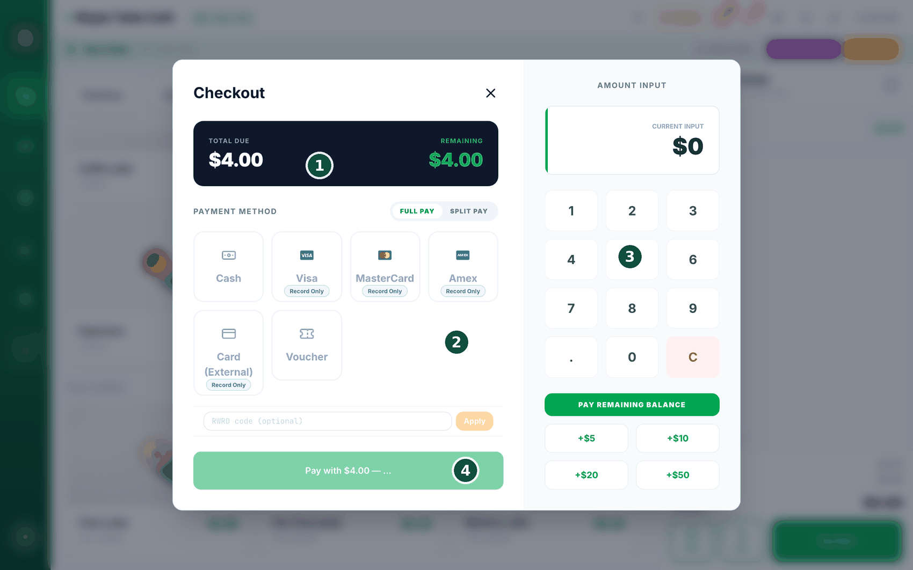
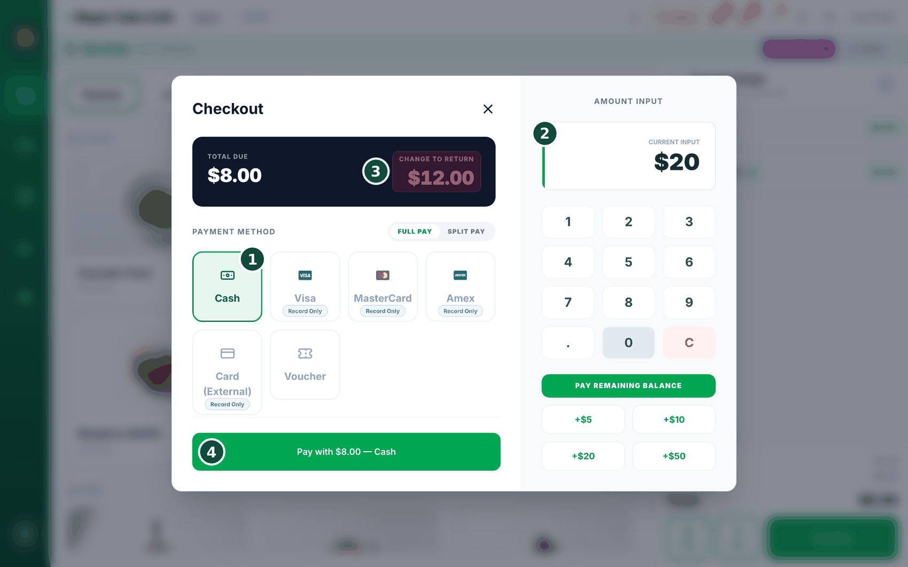
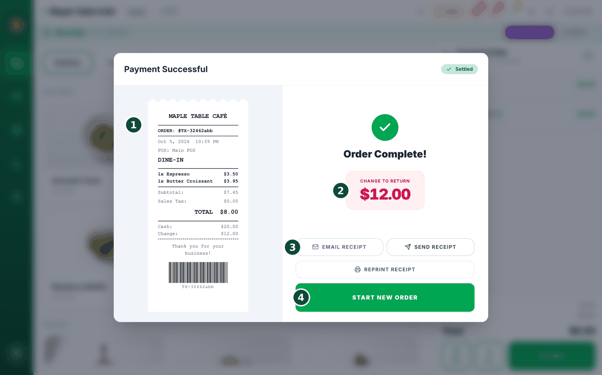
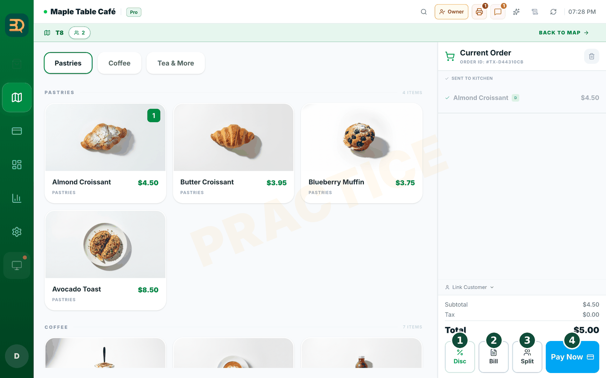
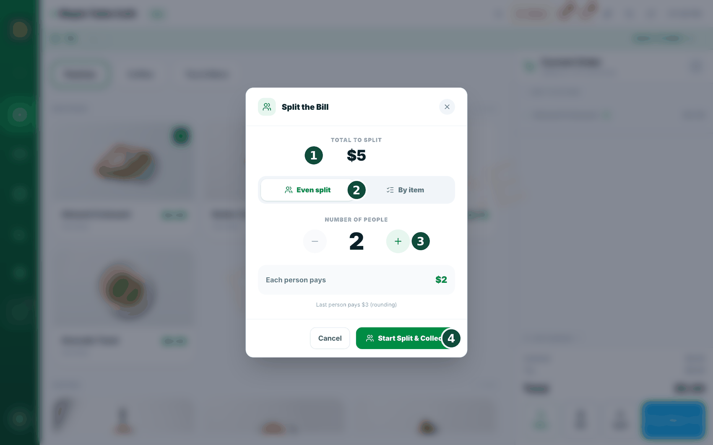
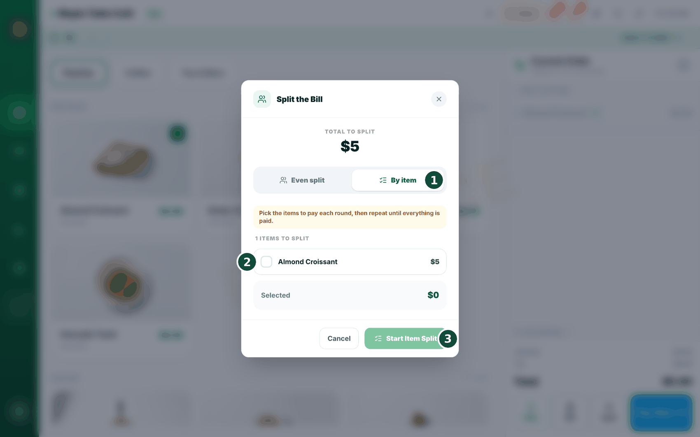

7收款
接下来是最令人高兴的部分：收款。您今天就可以收取现金；一旦关联了您自己的 Stripe 账户，就可以收取银行卡付款。BrewDesk 绝不会在您的刷卡销售之上另外收费。

- 完成订单后，点击 Pay Now（立即支付），打开结账界面。

- 收取现金时，点击 Cash（现金），输入顾客递来的金额。BrewDesk 会显示应找回的零钱。
- 收取银行卡时：如果已连接刷卡器（Stripe 终端），点击 Card（银行卡）。如果没有，则会看到 Visa、MasterCard、Amex 等卡品牌按钮，以及 Card (External)。这些按钮只是记录您在另一台独立终端上收取的银行卡付款（Record Only，仅记录）。（刷卡器支付需要先关联 Stripe 账户，见下一步。）
- 要收取银行卡付款，请在 Settings › Payments 中关联您自己的 Stripe 账户，连接是免费的。在同一界面中，您还可以开启或关闭 Cash（现金）、Card (Record Only)（银行卡（仅记录））和 Voucher（代金券）支付方式。
- 结账界面顶部的 Full Pay（全额支付）/ Split Pay（分单支付）切换开关：Full Pay（默认）用一种方式一次付清全款；Split Pay 适用于一个人一部分付现金、一部分刷卡。
- 需要把一张账单分给几个人付？点击点单界面右下角的 Split（分单）按钮。您可以平均分摊或按商品分摊，每一份还可以单独加小费。详见下方的分账。

所有套餐的刷卡销售，BrewDesk 均加收 0%。您的款项会直接进入您自己的 Stripe 账户，BrewDesk 绝不夹在中间，也绝不抽成。*
* 您按 Stripe 的标准费率直接向其付费，BrewDesk 不会在此基础上额外加收。
分账
当一桌客人想分开付款时，BrewDesk 可以帮您拆分账单。有两种简单的方式：在几个人之间平均分摊，或按商品分摊，让每个人只为自己点的东西付款。每一份都可以单独加小费，一个人甚至可以一部分付现金、一部分刷卡。
在堂食订单（桌台服务）中，先把商品发送到厨房，然后点击点单界面右下角那排按钮（Disc · Bill · Split · Pay Now）中的 Split。它不在点击 Pay Now 后进入的结账界面里。分账只适用于桌台订单，因此要在该桌的商品发送之后才会出现该按钮。
平均分摊（AA 制）


- 点击 Split，然后选择 Even split（平均分摊）。
- 用 − 和 + 按钮设置人数。BrewDesk 会在下方显示 Each person pays（每人应付）。点击 Start Split & Collect。
- 现在逐份收款。屏幕会显示 "Person 1 of 4"（第 1 位，共 4 位）。收取这位顾客的现金或刷卡后，会进入 "Person 2 of 4"，依此类推。
- 最后一位付完后，点击 Start New Order（开始新订单），这张餐桌即已结清并清空。
按商品分摊

- 点击 Split，然后选择 By item（按商品）。
- 勾选这位顾客要付款的商品，BrewDesk 会为您合计。点击 Pay Selected（支付所选）并收取他们的款项。
- 对下一位顾客的商品重复同样的操作，直到“剩余商品”数量为零。订单随后会自动完成。
三下点击搞定 AA 制。平均分摊、按商品分摊，或在同一份账单上混用现金和银行卡，BrewDesk 自动计算，并为每个人打印各自的小票（“Split 1 of 4”）。无需计算器，也不用在餐桌上争论。
须知：如果您退款其中一份，小费仍归店铺所有（只退还商品金额），并且只要还有一笔分账仅付了一半，BrewDesk 就不允许您日结。
事后结清订单的小费
有时订单未付款，要到当天结束时才结清。如果涉及小费，BrewDesk 现在会在收款之前先询问您，让小费不会悄悄丢失。
日结时，点击一个未付款订单并选择 Settle unpaid order（结清未付订单）。小费框位于支付界面顶部。
- 如果订单上已有小费，您会看到 "Tip recorded on this order"（此订单已记录小费）以及两个按钮：Include tip（包含小费）或 Exclude tip（不含小费）。您必须二选一，否则 BrewDesk 不会收款。
- 如果订单上没有小费，但顾客在您的刷卡终端上付了小费，请使用 Add a tip（添加小费）。输入金额并点击 Apply（应用）。
- 如果您使用员工账户，请在 Tip goes to（小费归属）下选择归属人。这是必填项，没有归属人的小费无法发给任何人。
- 照常收款。点击 Back to closing（返回日结）继续完成当天的其他工作。
现金收款取整
Cash Payment Rounding（现金收款取整）用来处理零碎的硬币。在许多国家，最小的硬币面值大于账单的最后一位数，已经没人携带 1 分硬币了。所以当现金顾客应付 10.03 时，您收 10.00，那 3 就免了。BrewDesk 现在可以替您完成这样的取整（仅限现金付款），并记录您免掉的每一枚硬币。
打开 Settings › Payments，向下滚动到 Cash Payment Rounding。只有店主能打开 Payments 标签页，所以只有店主能设置此项。每家店铺的初始状态都是关闭。

- 开启 Enable cash payment rounding。
- 输入 Rounding increment，即您实际使用的最小硬币面值（0.05、10、100，视您所在地而定）。如果保持为 0，这个开关不起任何作用，输入框下方的提示正是这样告诉您的。
- 选择 Rounding direction（取整方向）：Nearest（就近取整，向上或向下取较近的）、Round down（向下取整，始终对顾客有利）或 Round up（向上取整）。
- 查看下方的灰色提示。BrewDesk 了解您所在国家的通行做法并会告知："Common practice in this country: round to 0.05 using Nearest (legally required)."（本国通行做法：就近取整到 0.05（法律要求）。）点击 Apply，它会自动为您填入取整单位和方向。
- 点击设置页面顶部的 Save（保存）。
Settings › Tax & Service 中（见设置税费）。像隔壁店一样取整，账目里却一分不丢。只需设置一次硬币单位，每笔现金合计都会落在您实际拥有的硬币面值上。每一分取整的零头仍有记录、仍会印在小票上，并在日结时对得上账，您的会计永远不必问零钱去了哪里。